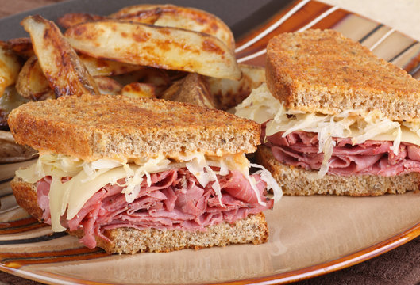

REUBEN SANDWICH

INGREDIENTS
- 8 slices rye bread
- 1/2 pound corned beef, thinly sliced
- 1/2 pound sauerkraut, drained
- 8 slices Swiss cheese
- 1/2 cup Thousand Island dressing
- 2 tablespoons unsalted butter, softened
INSTRUCTIONS
- Preheat a pan or griddle over medium heat.
- Butter one side of each slice of rye bread.
- On four slices of the bread, spread a generous amount of Thousand Island dressing.
- On the other four slices of bread, place a slice of Swiss cheese.
- Divide the corned beef evenly among the four slices of bread with Thousand Island dressing, followed by the sauerkraut.
- Place the cheese-topped bread slices over the sauerkraut to make four sandwiches, buttered side facing out.
- Grill the sandwiches on the preheated pan or griddle until the bread is golden brown and the cheese is melted, about 3-5 minutes per side.
- Remove the sandwiches from the heat and let them rest for a minute or two before slicing in half and serving.